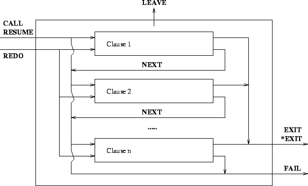

Next: Format of the Tracing
Up: Debugging
Previous: Debugging
Index
The Box Model
The ECLiPSe debugger is based on a port model which is an extension
of the classical Box Model commonly used in Prolog debugging.
A procedure invocation (or goal) is represented by a box with entry
and exit ports. Each time a procedure is invoked, a box is created
and given a unique invocation number. The invocations of subgoals of
this procedure are seen as boxes inside this procedure box.
Figure 14.1:
The box model
|

|
Tracing the flow of the execution consists in tracing the crossing of
the execution flow through any of the port of the box.
The five basic ports of the box model of ECLiPSe are the CALL, EXIT,
REDO, FAIL and NEXT ports, the suspension facilities are traced through
the DELAY and RESUME ports, and the exceptional exit is indicated by LEAVE.
- CALL:
- When a procedure is invoked, the flow of the execution
enters the procedure box by its CALL port and enters the first clause
box which could (since not all clauses are tried, some of them being
sure to fail, i.e. indexing is shown) unify with the goal.
It may happen that a procedure is
called with arguments that make it sure to fail (because of
indexing). In such cases, the flow does not enter any clause box.
For each CALL port a new procedure box is created and is given:
- an invocation number that is one higher than that given for
the most recent CALL port. This allows to uniquely identify a
procedure invocation and all its corresponding ports.
- a level that is one higher than that of its parent goal.
The displayed variable instantiations are the ones at call time,
i.e. before the head unification of any clause.
- EXIT:
- When a clause of a predicate succeeds (i.e. unification
succeeded and all procedures called by the clause succeeded),
the flow gets out of the box by the EXIT port of both boxes (only
the EXIT port of the procedure box is traced).
When a procedure exits non-deterministically (and there are still
other clauses to try on that procedure or one of its children goals
has alternatives which could be resatisfied), the EXIT port is traced
with an asterisk (*EXIT). When the last possibly matching clause of a
procedure is exited, the exit is traced without asterisk. This means
that this procedure box will never be retried as there is no other
untried alternative.
The instantiations shown in the EXIT port are the ones at exit time,
they result from the (successful) execution of the procedure.
- FAIL:
- When a clause of a procedure fails (because head unification
failed or because a sub-goal failed), the flow of the execution exits
the clause box and leaves the procedure box via the FAIL port.
Note that the debugger cannot display any argument information at
FAIL ports (an ellipsis
... is displayed instead for each argument).
- NEXT:
- If a clause fails and there is another possibly
matching clause to try, then that one is tried for unification.
The flow of the execution from the failure of one clause to the
head unification of a following clause is traced as a NEXT port.
The displayed variable instantiations are the same as those of the
corresponding CALL or REDO port.
- ELSE:
- This is similar to the NEXT port, but indicates that the next branch of a
disjunction (;/2)
it tried after the previous branch failed.
The predicate that gets displayed with the port is the predicate
which contains the disjunction (the immediate ancestor).
- REDO:
- When a procedure box is exited trough an *EXIT port,
the box can be retried later to get a new solution. This will happen when a
later goal fails. The backtracking will cause failing of all
procedures that do not have any alternative, then the execution flow
will enter a
procedure box that an contains alternative through a REDO port.
Two situations may occur: either the last tried clause has called a
procedure that has left a choice point (it has exited through an
*EXIT port). In that case the nested procedure box is re-entered
though another REDO-port.
Otherwise, if the last clause tried does not contain any
nondeterministically exited boxes, but there are other untried clauses
in the procedure box, the next possibly matching clause will be tried.
The last REDO port in such a sequence is the one which contains the
actual alternative that is tried. The variable instantiations for all
REDO ports in such a sequence are the ones corresponding to the call
time of the last one.
- LEAVE:
- This port allows to trace the execution of a the
block/3 and
exit_block/1
predicates within the box model. The predicate
block/3 is traced as
a normal procedure. If the goal in its first argument fails,
block/3 fails, if it
exits, block/3 exits.
If the predicate exit_block/1 is called (and exited since it
never fails), all the goals inside the matching block are left through
a special port called LEAVE, so that each entry port matches with an
exit port. The recover procedure (in the third argument of
block/3) is then
called and traced normally and
block/3 will exit or
fail (or even leave) depending on the recover procedure.
As with the FAIL port, no argument value are displayed in the LEAVE port.
- DELAY:
- The displayed goal becomes suspended. This is a singleton port, it does
not enter or leave a box. However, a new invocation number is assigned
to the delayed goal, and this number will be used in the matching RESUME port.
The DELAY port is caused by one of the built-in predicates
suspend/3,
suspend/4,
make_suspension/3
or a delay clause.
The port is displayed just after the delayed goal has been created.
- RESUME:
- When a waking condition causes the resuming of
a delayed goal, the procedure box is entered through its RESUME
port. The box then behaves as if it had been entered through its CALL
port. The invocation number is the same as in its previous DELAY port.
which makes it easy to identify corresponding delay and resume events.
However the depth level of the RESUME corresponds to the waking situation.
It is traced like a subgoal of the goal which has caused the waking.
In the rest of this chapter the user interface to the debugger is
described, including the commands available in the debugger itself as
well as built-in predicates which influence it. Some of the debugger
commands are explained using an excerpt of a debugger session. In
these examples, the user input is always underlined (it is in fact
not always output as typed) to distinguish it from the computer output.
Next: Format of the Tracing
Up: Debugging
Previous: Debugging
Index
Warwick Harvey
2005-01-25